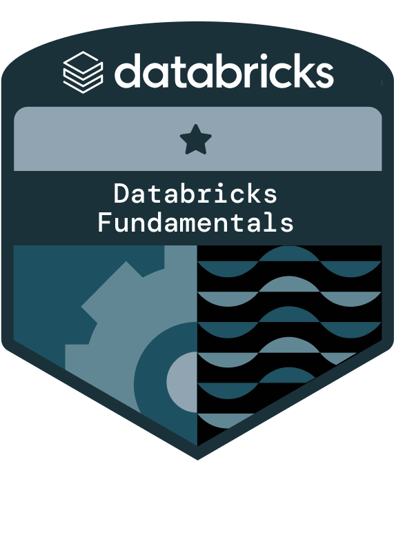

Engenharia que entrega valor

Guilherme Ferreira
Analytics & Data Engineer
Construindo soluções de dados que conectam tecnologia e negócio.
Engenharia de Dados
SQL Relacional
ETL & Data Pipelines
Orchestration — Prefect & Airflow
Python & Spark
Cloud — GCP & AWS
Business Intelligence
Power BI
DAX
Excel
Data Warehousing
Analytics
Certificação
